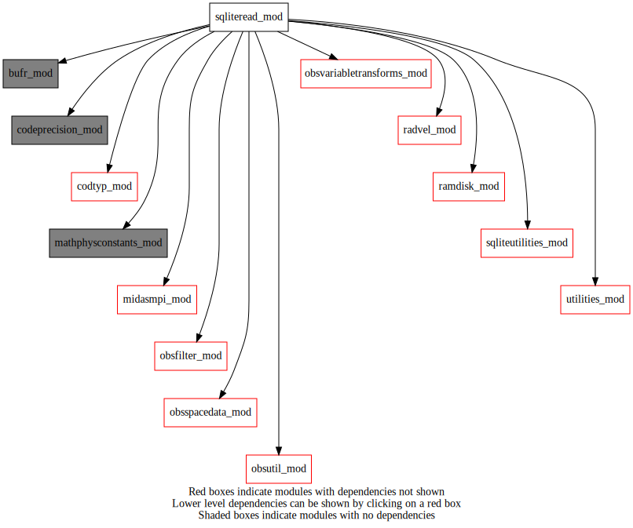
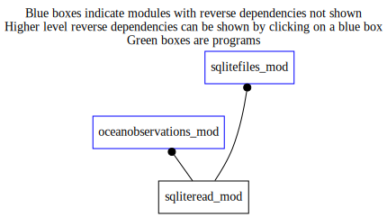

Dependency Diagrams:
 Direct Dependency Diagram¶
 Reverse Dependency Diagram¶
Description
MODULE sqliteRead (prefix=’sqlr’ category=’3. Observation input/output’)
- Purpose
To read and update SQLITE observation files. Data is stored in obsSpaceData object.
Quick access
- Routines
sqlr_addcloudparametersandemissivity(),sqlr_addcolumn(),sqlr_addextradatarow(),sqlr_cleansqlite(),sqlr_getcolumnvaluesdate(),sqlr_insertsqlite(),sqlr_readsqlite(),sqlr_readsqlite_avhrr(),sqlr_updatesqlite(),sqlr_writeemptypseudosstobsfile(),sqlr_writepseudosstobs()Needed modules
codeprecision_mod: MODULE codePrecision_mod (prefix=’pre’ category=’8. Low-level utilities and constants’)
obsspacedata_mod: MODULE obsSpaceData_mod (prefix=’obs’ category=’6. High-level data objects’)
midasmpi_mod: MODULE midasMpi_mod (prefix=’mmpi’ category=’8. Low-level utilities and constants’)
fsqlite
mathphysconstants_mod: MODULE MathPhysConstants_mod (prefix=’mpc’ category=’8. Low-level utilities and constants’)
obsutil_mod: MODULE obsUtil_mod (prefix=’obsu’ category=’3. Observation input/output’)
utilities_mod: MODULE utilities_mod (prefix=’utl’ category=’8. Low-level utilities and constants’)
bufr_mod: MODULE bufr_mod (prefix=’bufr’ category=’8. Low-level utilities and constants’)
ramdisk_mod: MODULE ramDisk_mod (prefix=’ram’ category=’8. Low-level utilities and constants’)
codtyp_mod: MODULE codtyp_mod (prefix=’codtyp’ category=’8. Low-level utilities and constants’)
obsvariabletransforms_mod: MODULE obsVariableTransforms_mod (prefix=’ovt’ category=’4. Data Object transformations’)
obsfilter_mod: MODULE obsFilter_mod (prefix=’filt’ category=’5. Observation operators’)
sqliteutilities_mod: MODULE sqliteUtilities (prefix=’sqlu’ category=’3. Observation input/output’)
radvel_mod: MODULE radvel_mod (prefix=’rdv’ category=’5. Observation operators’)Variables
Subroutines and functions
- subroutine sqliteread_mod/sqlr_readsqlite_avhrr(obsdat, filename, headerindexbegin, headerindexend)¶
- Purpose
To read SQLite avhrr_cloud parameters.
- Arguments
obsdat [struct_obs ,inout] :: ObsSpaceData Structure
filename [character ,in] :: SQLite filename
headerindexbegin [integer ,in]
headerindexend [integer ,in]
- Called from
- Call to
sqlu_sqltableexists(),utl_abort(),obs_getnchanavhrr(),obs_headprimarykey(),obs_columnactive_rh()
- subroutine sqliteread_mod/sqlr_readsqlite(obsdat, familytype, filename)¶
- Purpose
To read SQLite namelist and files.
- Arguments
obsdat [struct_obs ,inout] :: ObsSpaceData Structure
familytype [character ,in] :: Family Type
filename [character ,in] :: SQLite filename
- Called from
- Call to
sqlu_getcolumnvaluesnum(),utl_abort(),utl_splitstring(),utl_stringarraytointegerarray(),ovt_setup(),sqlu_getsqlcolumnnames(),utl_removeemptystrings(),utl_combinestring(),obs_numheader(),obs_numbody(),obs_setbodyprimarykey(),obs_headset_i(),sqlu_handleerror(),obs_setfamily(),obs_setheadprimarykey(),obs_set_c(),obs_columnactive_ih(),codtyp_get_codtyp(),obsu_cvt_obs_instrum(),obs_columnactive_rb(),obs_bodyset_i(),rdv_getlatlonhrfromrange(),obs_bodyelem_i(),filt_bufrcodeassimilated(),ovt_bufrcodeskipped(),sqlr_addextradatarow(),ovt_getdestinationbufrcode(),ovt_iswindobs()
- subroutine sqliteread_mod/sqlr_addextradatarow(obsdat, vertcoord, obsvarno, vertcoordtype, numberdata)¶
- Purpose
Initialize data values for an extra row in data table.
- Arguments
obsdat [struct_obs ,inout]
vertcoord [real ,in]
obsvarno [integer ,in]
vertcoordtype [integer ,in]
numberdata [integer ,in]
- Called from
- Call to
- subroutine sqliteread_mod/sqlr_addcolumn(obsspacecolindexsource, columnname, tablename, filename)¶
- Purpose
Add columns to sqlite tables that does not previously exists.
- Arguments
obsspacecolindexsource [integer ,in]
columnname [character ,in]
tablename [character ,in]
filename [character ,in]
- Called from
- Call to
- subroutine sqliteread_mod/sqlr_updatesqlite(db, obsdat, familytype, filename, filenumber)¶
- Purpose
update SQLite files. List of items to update is in the namSQLUpdate namelist
- Arguments
db [fsql_database ,inout] :: SQL database
obsdat [struct_obs ,inout] :: obsSpaceData
familytype [character ,in] :: Observation Family Type
filename [character ,in] :: file name
filenumber [integer ,in] :: FILE NUMBER ASSOCIATED WITH db
- Called from
- Call to
utl_abort(),sqlu_sqlcolumnexists(),obs_numheader(),obs_headelem_i(),obs_bodyelem_r(),sqlr_addcolumn(),sqlu_handleerror(),obs_headprimarykey(),obs_bodyelem_i(),obs_bodyprimarykey()
- subroutine sqliteread_mod/sqlr_addcloudparametersandemissivity(db, obsdat, filenumber)¶
- Purpose
Add a new table if it doesn’t already exist cld_params with cloud-related information.
- Arguments
db [fsql_database ,inout] :: SQLite file handle
obsdat [struct_obs ,in]
filenumber [integer ,in]
- Called from
- Call to
sqlu_handleerror(),obs_numheader(),obs_headelem_i(),obs_headprimarykey(),obs_headelem_r()
- subroutine sqliteread_mod/sqlr_insertsqlite(db, obsdat, familytype, filename, filenumber)¶
- Purpose
Insert rows in the sqlite file data table for bufr element IDs specified in the namelist block namSQLInsert.
- Arguments
db [fsql_database ] :: type for SQLIte file handle
obsdat [struct_obs ]
familytype [character ]
filename [character ]
filenumber [integer ]
- Called from
- Call to
obs_numheader(),utl_abort(),sqlu_handleerror(),obs_headelem_i(),obs_headprimarykey(),obs_bodyprimarykey(),obs_bodyelem_i(),obs_bodyelem_r()
- subroutine sqliteread_mod/sqlr_cleansqlite(db, filename)¶
- Purpose
Remove flagged (bit 11 set) observations in an SQLite file
- Arguments
db [fsql_database ,inout] :: SQLite file handle
filename [character ,in]
- Called from
- Call to
- subroutine sqliteread_mod/sqlr_writepseudosstobs(obsdata, obsfamily, instrumentfilename)¶
- Purpose
To write the obsSpaceData content into SQLite format files
- Arguments
obsdata [struct_obs ,inout]
obsfamily [character ,in]
instrumentfilename [character ,in]
- Called from
- Call to
sqlu_getinitialidobsdata(),obs_getheaderindex(),ram_getramdiskdir(),obs_mpilocal(),sqlu_handleerror(),obs_headelem_i(),obs_elem_c(),obs_headelem_r(),obs_bodyelem_i(),obs_bodyelem_r()
- subroutine sqliteread_mod/sqlr_writeemptypseudosstobsfile(obsdata, obsfamily, instrumentfilename)¶
- Purpose
to generate an empty SQLite SST pseudo obs file for mpi tasks, with no sea-ice on them.
- Arguments
obsdata [struct_obs ,inout]
obsfamily [character ,in]
instrumentfilename [character ,in]
- Called from
- Call to
sqlu_getinitialidobsdata(),ram_getramdiskdir(),obs_mpilocal(),sqlu_handleerror()
- subroutine sqliteread_mod/sqlr_getcolumnvaluesdate(columndatevalues, columntimevalues, filename)¶
- Purpose
Read the date and time column values from sqlite file.
- Arguments
columndatevalues (*) [integer ,out,allocatable]
columntimevalues (*) [integer ,out,allocatable]
filename [character ,in]
- Called from
- Call to
{kind=link}
{kind=link}